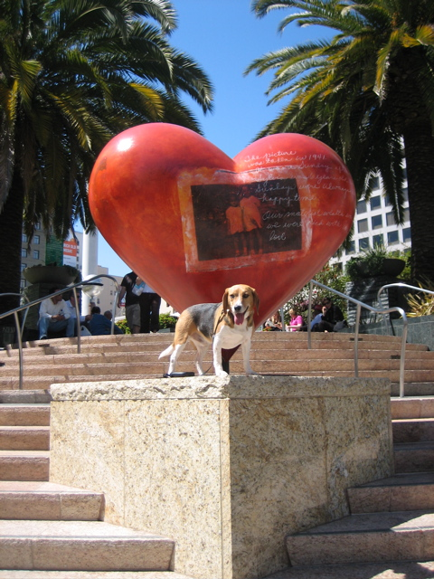

<--Previous
Up
Next-->

Bless Your Lil' Heart
It's Hearts in San Francisco time again! For the past few years a new batch of heart-shaped instant artworks has shown up in Union Square. Hux doesn't miss the chance to visit.